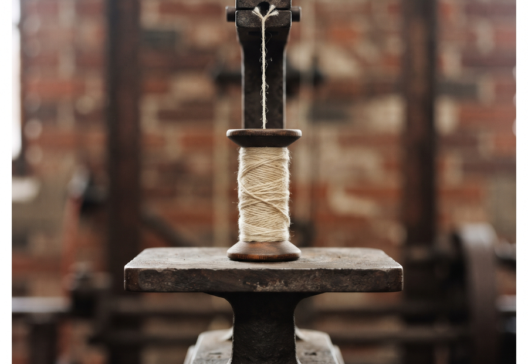

The Tensile Bench. A fuzz test generator that reads one Python module and writes generated test cases for its top level functions, each one fed value after value drawn at random.
python3 main.py MODULE_PATH [--num_tests N] [--string_length N] [--int_min N] [--int_max N] [--output_file FILE]
Parameter values are drawn from the annotation on each parameter: int, float, str, and bool are honoured, and every other annotation, list and dict included, falls back to str, so a generated call can pass a string where the author expected a container. A target that cannot be read or parsed, or that defines no functions of its own, fails the run at exit 1 and writes nothing. The repo also carries a SECURITY.md beside the code.
| Option | What it does |
|---|---|
module_path | The module to generate tests for. Required. The README parameter list omits it; the code requires it. |
--num_tests | Generated tests per function. Default 10. |
--string_length | Length of generated string values. Default 10. |
--int_min / --int_max | The integer range drawn from. Defaults -100 and 100. |
--output_file | Send the generated tests to a file instead of stdout. |
Python, standard library only. The requirements file is a comment saying so, and noting that the bandit, flake8, pylint, and pyre-check entries that stood there before were never imported or run by this tool.